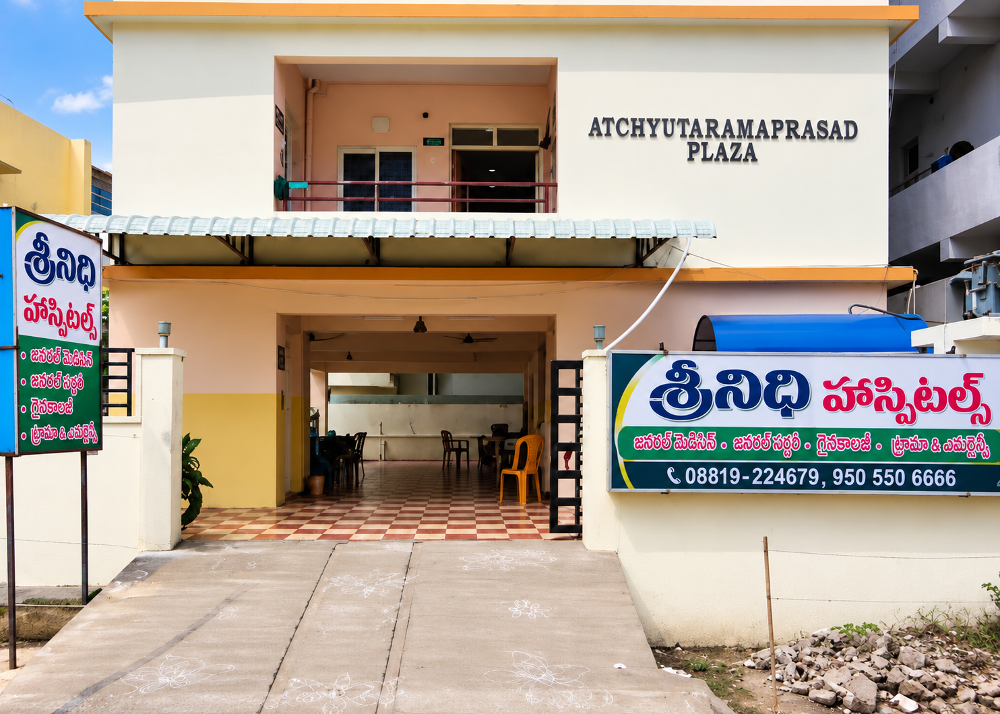
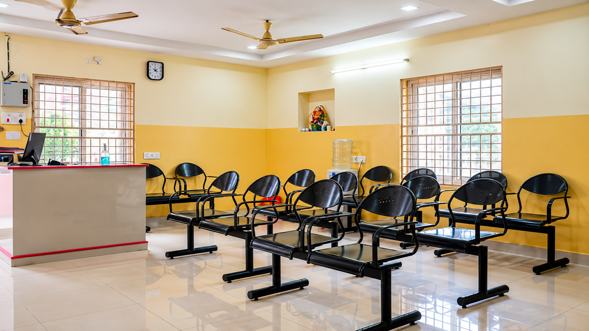

Srinidhi Hospital, Tanuku
Hospital information for patients and families in Tanuku and nearby communities.

A local point of contact for medical care.
Srinidhi Hospital is located in Venkatarayapuram, Tanuku, opposite Siddhartha Scan Center.
The hospital provides neurology and general medical care. Call the hospital to ask about the doctor on duty, consultation times and available services.
Inside Srinidhi Hospital
View the hospital building and available facility photographs. Contact the hospital to ask about specific facilities.

About the hospital
This page introduces Srinidhi Hospital and its location in Tanuku. The hospital's founding year, background, mission and milestones can be included once the hospital team confirms the details.
For current information about consultations, services and admission arrangements, please contact the hospital directly.
Doddipatlavari Thota Street, Venkatarayapuram, Tanuku, Andhra Pradesh 534211.
Visit us in Venkatarayapuram.
Opposite Siddhartha Scan Center, Doddipatlavari Thota Street, Venkatarayapuram, Tanuku, Andhra Pradesh 534211
Open Google Maps